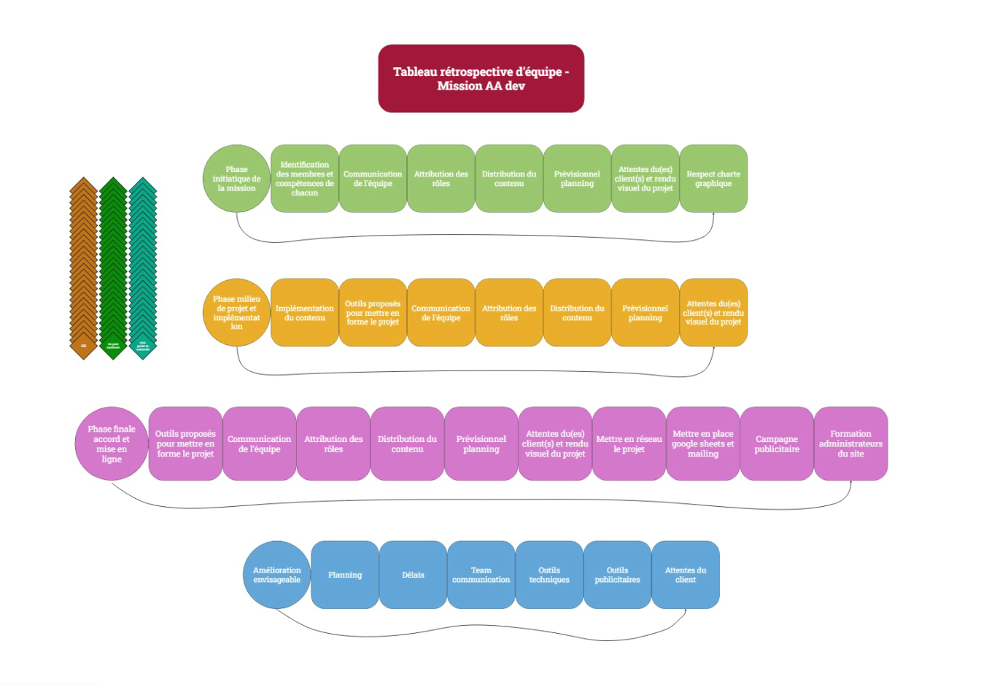

-
Rétrospective mission site AA ;
J'ai eu la chance d'avoir une première expérience pofessionnelle assez tôt, au vu du temps d'auto-formation que j'ai pu avoir en developpement web.
A la suite de cette expérience j'ai découvert la construction de site web à l'aide de l'outil WordPress. Son utilisation a pu être poussé grâce au plan payant Creator, qui permet de disposer d'un panel d'outils de créations, d'aménagement et d'implémentation de code assez diversifié.
Pour conclure cette expérience accompagnée de deux professionnels sur le marché du developpemment depuis plusieurs dizaines d'années, j'ai créé une rétrospective pour chaque membres de l'équipe sur ce projet (trois membres ; scrum Master, lead developpeur, junior developpeur ).
En image, à l'aide de l'outil Miro on peut voir les différents points traités pendant cette mission :
 lien Miro -
Plan commercial ;
Développeur freelance : Comment trouver des clients ?
SOMMAIRE
- 1 - Sollicitez votre entourage
- 2 – Démarchez des entreprises
- 3 – Ne négligez pas les sites d’offres d’emploi
- 4 – Trouvez un partenaire freelance
- 5 – Soignez votre portfolio
- 6 – Pensez au guest-blogging
- 7 – Soyez actifs sur les réseaux sociaux
- 8 – Non, les forums ne sont pas morts !
- 9 – Optez pour les plateformes freelances
- 10 – Osez la campagne publicitaire
- 11 – Déconnectez-vous !
- 12 – Et vos anciens clients alors ?
- 13 – Où trouver des clients en freelance : ce qu’on en pense
1 - Sollicitez votre entourage
(cliquez ici pour retourner au sommaire)
Pour bien débuter son activité de développeur freelance (ou rebondir lors d’une période creuse), la solution la plus simple consiste à faire appel à son réseau. Pour cela, mettez tout votre entourage à contribution : votre famille bien sûr, mais aussi vos amis, vos anciens collègues et camarades de classe, et même vos anciens professeurs. L’un d’entre eux pourraient avoir besoin de vos services pour ses projets, ou connaître quelqu’un dans cette situation.
Informez votre réseau de votre champ de compétences de développeurs. Précisez quel type de clients vous recherchez pour votre activité d’indépendant. Vous pouvez également leur demander de partager le lien de votre site internet sur leurs réseaux sociaux, et même de vous laisser une recommandation sur LinkedIn sur vos compétences en développement.
Laissez aux intéressés plusieurs de vos cartes de visite, afin qu’ils puissent en distribuer si l’occasion venait à se présenter.
(cliquez ici pour retourner au sommaire)
Si vous vous demandez où trouver des clients, soyez en sûrs, le démarchage est la méthode la plus connue. Le principe est simple : il s’agit de contacter (par mail, au téléphone, par courrier, lors d’un salon professionnel…) des entreprises dans le but de leur présenter vos offres et vos services de développeur. Ceci dans l’espoir, bien sûr, de les convaincre de faire appel à vous pour leurs projets. Votre expertise en tant que développeur indépendant va leur permettre de faire avancer leur projet, apporter un nouveau regard sur leur travail et de nouvelles compétences pour améliorer leur performance.
Nous aurons l’occasion de revenir plus en profondeur sur ce sujet dans de futurs articles. Néanmoins, voici quelques conseils pour bien prospecter :
- - Faites une liste des entreprises pour lesquelles vous aimeriez travailler ;
- - Déduisez-en votre cœur de cible et créez un ou plusieurs personas des personnes qui travail dans le département informatique pour les représenter ;
- - Rédigez des argumentaires de vente spécialement adressés à ces personas ;
- - Contactez lesdites entreprises (et d’autres similaires) pour leur proposer vos services. Pour cela, référez-vous à votre argumentaire de vente et optimisez vos chances de réponse en proposant une solution personnalisée ;
- - Relancez-les au bout de quelques jours si nécessaire.
Attention toutefois : avec la nouvelle norme RGPD, vous ne pouvez pas créer de base de données contenant les mails de prospects qui ne vous ont pas implicitement donné leur accord pour les contacter.
À noter que vous pouvez également utiliser le service web Sales Solutions proposé par LinkedIn afin de vous mettre directement en contact avec les responsables des entreprises que vous visez.
3 – Ne négligez pas les sites d’offres d’emploi
(cliquez ici pour retourner au sommaire)
Quand ils se demandent où trouver des clients, les freelances n’y pensent pas souvent et pourtant, les sites d’offres d’emploi sur le web sont un véritable vivier de contrats potentiels. En informatique notamment, un très grand nombre d’entreprises peinent à recruter tant la demande de développeur est forte.
À lire aussi : Le freelance va-t-il remplacer le développeur en CDI ?
Identifiez les entreprises qui recrutent des développeurs, affiner la sélection avec le salaire, les compétences requises puis contactez-les pour leur proposer vos services de programmation en tant que développeur freelance.
Les sites d’offres d’emploi proposent généralement de vous envoyer des alertes lorsque de nouvelles annonces sont publiées. N’hésitez pas à recourir à cet outil pour gagner du temps.
À noter que sur ces mêmes sites d’offres d’emploi, il est bien souvent possible de filtrer par type de contrat.
Si beaucoup optent pour les classiques stages / CDD / CDI, vous pourrez également y trouver quelques contrats freelance.
4 – Trouvez un partenaire freelance
(cliquez ici pour retourner au sommaire)
Où trouver de nouveaux clients et contrats ? Et si vous vous « associez » à un autre développeur freelance ?
Trouvez quelqu’un de confiance, qui a des compétences complémentaires aux vôtres ou avec la même formation informatique. Par exemple, un développeur freelance peut collaborer avec un webdesigner ou un scrum master freelance.
L’idée c’est de faire appel à l’autre lorsque l’on trouve une nouvelle mission, et même, pourquoi pas, de démarcher ensemble des entreprises afin de gagner en crédibilité.
Vous recevez une demande de devis que vous ne pouvez assurer ? Plutôt que d’accepter toutes les missions et prendre le risque de bâcler le travail, n’hésitez pas à rediriger votre futur client vers votre partenaire dont c’est le métier aussi. Ce dernier n’hésitera pas à vous renvoyer l’ascenseur le moment venu.
J’ai moi-même eu recours à cette solution à plusieurs reprises, et j’ai toujours trouvé les collaborations très enrichissantes. Attention toutefois à sélectionner le bon freelance : rien de pire en effet que de voir son « partenaire » manquer de professionnalisme lors de la réalisation du projet.
Pour bien choisir votre partenaire freelance, n’hésitez pas à vous mettre vous-même dans la peau d’un recruteur.
(cliquez ici pour retourner au sommaire)
Le saviez-vous ? Le portfolio sur le web est le meilleur commercial du développeur freelance.
Bien qu’il soit tout à fait possible de réussir à trouver des clients sans portfolio, les choses sont nettement facilitées lorsque vous avez un site de qualité avec l’ensemble de vos projets de développement à présenter à vos prospects. Et s’il est bien référencé, ce sont des dizaines, des centaines voire des milliers de personnes et d’entreprises qui s’y rendront chaque jour.
Mais pour que votre site attire du trafic et, surtout, le convertisse en clients, vous devrez y dédier du temps et possiblement faire appel à un prestataire indépendant. Cela implique un design moderne et de qualité, textes clairs et incisifs, illustrations originales, boutons call to action en évidence, exemples de réalisations ou projets, création de POC ou application, témoignages de clients, blog régulièrement mis à jour avec de nouveaux contenus…
Pour chacune de vos expériences, vous pouvez mettre en avant l’application web ou mobile que vous avez réalisé comme développeur freelance, mais lorsque vous étiez salarié également.
Avoir un portfolio de qualité représente beaucoup de travail sur le long terme. N’hésitez pas à y réserver un créneau chaque semaine dans votre emploi du temps.
À lire aussi : Freelance développeur : trouvez des missions grâce à votre portfolio
Où trouver des clients quand on est développeur freelance ?
(cliquez ici pour retourner au sommaire)
Vous avez un portfolio mais peu de trafic ou d’offre de missions ? Avez-vous pensé au guest-blogging ?
Comme son nom l’indique, il s’agit de contacter le propriétaire d’un blog et de lui proposer d’y publier l’un de vos articles inédits sur le développement web. Vous en profiterez, bien sûr, pour glisser dans votre article fraîchement rédigé un lien vers votre propre site web.
Un arrangement gagnant-gagnant !
Pour que cette opération soit rentable pour vous, il va sans dire que votre article devra être de qualité. La cible du blog (et de votre article) doit être en corrélation avec votre propre cible : inutile de publier un comparatif des meilleurs appareils à raclette si vous vendez des applications mobiles !
Une société de portage ou un site qui cible les développeurs peut, par exemple, être intéressée par un contenu sur votre domaine d’expertise en tant que développeur et indépendant.
7 – Soyez actifs sur les réseaux sociaux
(cliquez ici pour retourner au sommaire)
Difficile aujourd’hui de se passer des réseaux sociaux pour son activité professionnelle de développeur. Vous vous en doutez, il ne s’agit pas de poster des selfies ou de raconter vos états d’âme, mais bien d’assoir votre image de marque et votre expertise technique sur le web.
Twitter, Facebook, LinkedIn… Tous ces réseaux peuvent véritablement devenir vos alliés à condition de bien savoir vous en servir.
Par exemple, sur LinkedIn vous pouvez rejoindre des groupes thématiques lié au développement. Publiez-y des commentaires pertinents pour aider d’autres personnes, et ainsi prouver votre expertise.
Sur Facebook, créez une page pour votre entreprise et fédérez une communauté autour de votre marque ou de la technologie que vous maitrisez.
Utilisez Twitter pour faire de la veille tech et partager vos résultats sur les applications que vous développez.
Recourez à YouTube pour publier des tutoriels vidéos pour les développeurs et donner une image moderne à votre entreprise. Et ainsi de suite !
Attention toutefois car les réseaux sociaux sont très vite chronophages… Restreignez votre activité à ceux qui ont le plus de chances d’être fréquentés par votre cible.
8 – Non, les forums ne sont pas morts !
(cliquez ici pour retourner au sommaire)
Il est vrai que depuis l’essor des réseaux sociaux, beaucoup de forums sont en perte de vitesse. Mais certains d’entre eux sont encore très actifs, et pourraient même vous aider à trouver votre prochaine mission et asseoir votre présence en ligne.
Prenez quelques heures de travail pour sélectionner les forums qui auraient le plus de chances d’être fréquentés par votre cible. Ne conservez que les plus actifs d’entre eux (inutile de perdre du temps sur des forums web désertiques, à moins éventuellement qu’ils soient particulièrement bien positionnés sur des requêtes clés).
Inscrivez-vous sur les forums de votre sélection et créez un profil détaillé, en n’oubliant pas bien sûr de laisser un lien vers votre portfolio dans votre signature. Ensuite un peu de gestion, consacrez une ou deux heures chaque semaine à la publication de messages sur lesdits forums.
Bien évidemment, le but n’est pas d’y faire étalage de votre vie privée, mais plutôt de démontrer votre expertise en aidant et conseillant gratuitement les membres de la communauté. Certains d’entre eux auront peut-être un jour besoin d’un professionnel pour leur projet… Et n’hésiteront pas à faire appel à vous si vous leur avez fait forte impression.
9 – Optez pour les plateformes freelances(cliquez ici pour retourner au sommaire)
Ces plateformes sont un endroit incontournable pour trouver des missions pour bien des freelances. Lorsque j’ai débuté mon activité de développeur indépendant il y a 10 ans, elles m’ont été vraiment très utiles (et le sont encore ponctuellement aujourd’hui). Elles présentent de nombreux avantages et vous permettent de bénéficier d’un flux entrant de missions. Vous profitez de la liberté du statut de freelance sans vous soucier du reste.
Il existe de nombreuses plateformes. Certaines sont ouvertes à tous les freelances, d’autres sont spécialisées dans un domaine en particulier comme FreelanceRepublik, qui est réservé aux développeurs et chefs de projet.
Le fonctionnement général varie d’une plateforme à l’autre. Parfois c’est au freelance de contacter le porteur de projet, parfois c’est l’inverse. Parfois même les freelances sont mis en compétition entre eux.
Enfin, certaines sont payantes (abonnement, commission…), d’autres, comme FreelanceRepublik, sont gratuites pour les freelances.
Utilisez notre comparatif des plateformes freelance pour savoir laquelle est la plus adaptée à votre profil !
10 – Osez la campagne publicitaire
(cliquez ici pour retourner au sommaire)
Pour gagner de l’argent, il peut être nécessaire… D’en dépenser. Si les campagnes publicitaires télévisées ou radio sont très onéreuses, Internet reste en revanche accessible à toutes les bourses.
Facebook, Twitter, LinkedIn, Instagram… La majorité des réseaux sociaux permettent de diffuser des annonces. Vous pouvez également envisager d’acheter des liens sponsorisés sur Google afin que votre entreprise de développeur apparaisse dans les résultats du moteur de recherche sur des requêtes ciblées. Cela va vous couter quelques euros par clic, mais les résultats sont immédiats.
Attention : pour que votre campagne publicitaire soit efficace, vous devez tout d’abord bien connaître votre cible. Adaptez votre discours à votre cible, et faites rediriger le lien non pas sur la page d’accueil de votre portfolio mais plutôt sur une landing page spécialement conçue pour elle.
(cliquez ici pour retourner au sommaire)
En tant que développeur ou chef de projet freelance, il est tout à fait normal de songer dans un premier temps aux solutions « online » pour trouver de nouveaux clients pour votre entreprise. Mais avez-vous essayé les solutions « offline » ?
Le principe est simple : il s’agit de vous rendre à un événement (freelancing, networking, salon, conférence…) qui pourrait vous permettre de rencontrer des personnes potentiellement intéressées par ce que vous proposez.
Soyez ouvert et à l’affut d’opportunités. Établissez le contact, expliquez en quelques mots ce que vous faites et essayez d’apporter un conseil ou des solutions aux personnes que vous rencontrez. Surtout, n’oubliez pas de leur laisser votre carte de visite afin qu’ils puissent vous recontacter par la suite pour leur prochain projet.
12 – Et vos anciens clients alors ?
(cliquez ici pour retourner au sommaire)
Je l’avais déjà évoqué dans un article sur la question de savoir comment fidéliser un client : les anciens clients ne sont surtout pas à négliger dans la recherche de nouveaux contrats pour développer votre chiffre d’affaires pour votre entreprise.
En effet, grâce à cette première expérience, ils vous connaissent déjà et vous ont déjà accordé leur confiance sur un projet, ce qui représente de bons avantages. Si votre collaboration s’est bien déroulée, il y a fort à parier qu’ils accepteront de réitérer l’expérience même si vos tarifs ont augmenté entre temps.
Et si vous les recontactiez ? Prenez des nouvelles de leur projet et voyez si vous pouvez les aider d’une quelconque manière sur un développement. Vous pouvez également leur demander de vous mettre en contact avec leur propre réseau professionnel : dans l’entrepreneuriat plus qu’ailleurs, qui ne tente rien n’a rien.
13 – Où trouver des clients en freelance : ce qu’on en pense
(cliquez ici pour retourner au sommaire)
Notre tour d’horizon des meilleures façons de trouver des clients en tant que freelance informatique est terminé.
Nous vous y avons proposé des méthodes online et offline, majoritairement gratuites. Certaines permettent d’obtenir des résultats sur du court terme, d’autres s’envisagent plutôt à long terme.
Quoi qu’il en soit, toutes peuvent s’avérer fructueuses, que ce soit lorsque vous démarrez une activité de freelance ou lorsque vous avez déjà plusieurs années d’expérience comme développeur derrière vous.